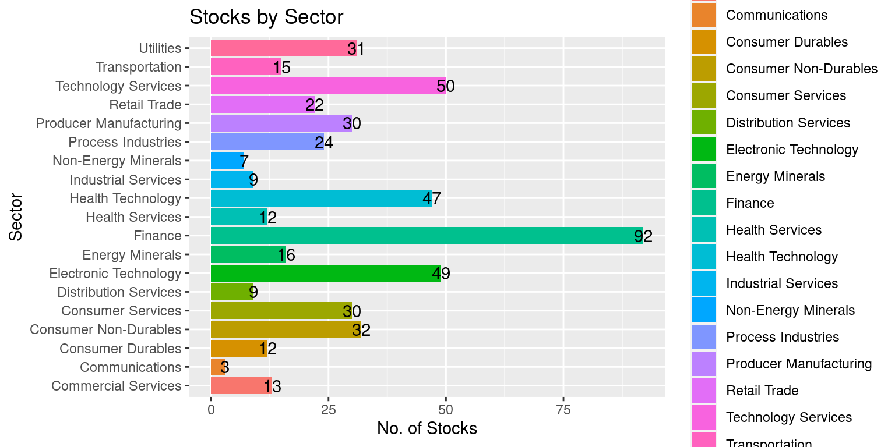

# Load the required libraries, suppressing annoying startup messages
library(dplyr, quietly = TRUE, warn.conflicts = FALSE)
library(tibble, quietly = TRUE, warn.conflicts = FALSE)
library(ggplot2, quietly = TRUE, warn.conflicts = FALSE) # For data visualization
library(ggpubr, quietly = TRUE, warn.conflicts = FALSE) # For data visualization
library(gsheet, quietly = TRUE, warn.conflicts = FALSE)
library(rmarkdown, quietly = TRUE, warn.conflicts = FALSE)
library(knitr, quietly = TRUE, warn.conflicts = FALSE)
library(kableExtra, quietly = TRUE, warn.conflicts = FALSE) Live Case: S&P500 (1 of 3)
Sep 22, 2023
S&P 500
The S&P 500, also called the Standard & Poor’s 500, is a stock market index that tracks the performance of 500 major publicly traded companies listed on U.S. stock exchanges. It serves as a widely accepted benchmark for assessing the overall health and performance of the U.S. stock market.
S&P Dow Jones Indices, a division of S&P Global, is responsible for maintaining the index. The selection of companies included in the S&P 500 is determined by a committee, considering factors such as market capitalization, liquidity, and industry representation.
The S&P is a float-weighted index, meaning the market capitalizations of the companies in the index are adjusted by the number of shares available for public trading. https://www.investopedia.com/terms/s/sp500.asp
The performance of the S&P 500 is frequently used to gauge the broader stock market and is commonly referenced by investors, analysts, and financial media. It provides a snapshot of how large-cap U.S. stocks are faring and is considered a reliable indicator of overall market sentiment.
Typically, the S&P 500 index consists of 500 stocks. However, in reality, there are actually 503 stocks included. This discrepancy arises because three of the listed companies have multiple share classes, and each class is considered a separate stock that needs to be included in the index.
Among these 503 stocks, Apple, the technology giant, holds the top position with a market capitalization of $2.35 billion. Following Apple, Microsoft and Amazon.com rank as the second and third largest stocks in the S&P 500, respectively. The next positions are held by Nvidia Corp, Tesla, Berkshire Hathaway, and two classes of shares from Google’s parent company, Alphabet..
S&P 500 Data - Preliminary Analysis
We will analyze a real-world, recent dataset containing information about the S&P500 stocks. The dataset is located in a Google Sheet
The data is disorganized and challenging to understand. We will review the data and proceed in a step-by-step manner.
Read the S&P500 data from a Google Sheet into a tibble dataframe.
The complete URL is
https://docs.google.com/spreadsheets/d/11ahk9uWxBkDqrhNm7qYmiTwrlSC53N1zvXYfv7ttOCM/The Google Sheet ID is:
11ahk9uWxBkDqrhNm7qYmiTwrlSC53N1zvXYfv7ttOCM. We can use the functiongsheet2tblin packagegsheetto read the Google Sheet into a tibble or dataframe, as demonstrated in the following code.
# Read S&P500 stock data present in a Google Sheet.
library(gsheet)
prefix <- "https://docs.google.com/spreadsheets/d/"
sheetID <- "11ahk9uWxBkDqrhNm7qYmiTwrlSC53N1zvXYfv7ttOCM"
url500 <- paste(prefix,sheetID) # Form the URL to connect to
sp500 <- gsheet2tbl(url500) # Read it into a tibble called sp500Review the data
- We want to understand the different data columns and their data structure. For this purpose, we run the
str()function.
str(sp500)spc_tbl_ [503 × 36] (S3: spec_tbl_df/tbl_df/tbl/data.frame)
$ Date : chr [1:503] "9/24/2023" "9/24/2023" "9/24/2023" "9/24/2023" ...
$ Stock : chr [1:503] "A" "AAL" "AAPL" "ABBV" ...
$ Description : chr [1:503] "Agilent Technologies, Inc." "American Airlines Group, Inc." "Apple Inc." "AbbVie Inc." ...
$ Sector : chr [1:503] "Health Technology" "Transportation" "Electronic Technology" "Health Technology" ...
$ Industry : chr [1:503] "Medical Specialties" "Airlines" "Telecommunications Equipment" "Pharmaceuticals: Major" ...
$ Market Capitalization : num [1:503] 3.36e+10 8.66e+09 2.75e+12 2.71e+11 1.78e+11 ...
$ Price : num [1:503] 114.9 13.2 175.7 153.6 102.7 ...
$ 52 Week Low : num [1:503] 109 11.7 124.2 131 93.3 ...
$ 52 Week High : num [1:503] 160.3 19.1 198.2 168.1 115.8 ...
$ Return on Equity (TTM) : num [1:503] 21.3 NA 160.1 62.8 14 ...
$ Return on Assets (TTM) : num [1:503] 10.7 3.9 28.2 6.2 7 5.5 14.9 18.3 7.5 7.1 ...
$ Return on Invested Capital (TTM) : num [1:503] 14.1 8 60.9 12 9.8 13.9 27.6 26.8 8.8 12.3 ...
$ Gross Margin (TTM) : num [1:503] 53.8 23.8 43.4 71.8 49.5 NA 32.2 86.9 57.2 6.8 ...
$ Operating Margin (TTM) : num [1:503] 23.5 9.4 29.2 40.1 15.1 20.1 15.3 33.6 33.7 3.5 ...
$ Net Margin (TTM) : num [1:503] 16.2 5 24.7 15.4 12.8 19.4 11.3 27.3 29.2 4.1 ...
$ Price to Earnings Ratio (TTM) : num [1:503] 30.1 3.6 29.5 31.6 35 13.3 28.2 49.7 24.4 10.8 ...
$ Price to Book (FY) : num [1:503] 6.4 NA 55.3 15.8 4.9 2.4 9 18.2 2.5 1.8 ...
$ Enterprise Value/EBITDA (TTM) : num [1:503] 18.2 5.3 22.5 10.4 20.2 NA 17.5 34.3 14.5 10.7 ...
$ EBITDA (TTM) : num [1:503] 1.92e+09 7.16e+09 1.24e+11 3.12e+10 9.28e+09 ...
$ EPS Diluted (TTM) : num [1:503] 3.8 3.7 6 4.9 2.9 6 11.2 11.1 7.4 7.5 ...
$ EBITDA (TTM YoY Growth) : num [1:503] 3.5 1074.1 -4.3 5.7 -32.1 ...
$ EBITDA (Quarterly YoY Growth) : num [1:503] -7.9 72.2 0.7 -7.5 -26.8 ...
$ EPS Diluted (TTM YoY Growth) : num [1:503] -13.2 NA -1.7 -31.1 -38.8 ...
$ EPS Diluted (Quarterly YoY Growth) : num [1:503] -65.8 156.4 5.4 121.1 -31.2 ...
$ Price to Free Cash Flow (TTM) : num [1:503] 23.9 6 27.5 11 32.7 6.8 21.6 NA 24.5 12.2 ...
$ Free Cash Flow (TTM YoY Growth) : num [1:503] 38.9 NA -6.1 11.6 -35.2 ...
$ Free Cash Flow (Quarterly YoY Growth) : num [1:503] 97.1 -10.3 16.8 26.3 -65.7 27.6 9.7 NA -24.5 796 ...
$ Debt to Equity Ratio (MRQ) : num [1:503] 0.5 NA 1.8 4.7 0.5 0.2 0.1 0.3 0.2 0.4 ...
$ Current Ratio (MRQ) : num [1:503] 2.3 0.7 1 0.9 1.6 0.6 1.4 1.2 1.7 1.6 ...
$ Quick Ratio (MRQ) : num [1:503] 1.7 0.7 0.9 0.8 1.2 NA 1.4 NA 1.1 1 ...
$ Dividend Yield Forward : num [1:503] 0.8 NA 0.5 3.9 2 NA 1.4 NA 1.9 2.2 ...
$ Dividends per share (Annual YoY Growth): num [1:503] 8.2 NA 5.9 7.5 5.5 NA 10.2 NA 10.4 8.1 ...
$ Price to Sales (FY) : num [1:503] 5 0.2 7.3 4.7 4.1 3.1 3.3 14.9 7.8 0.4 ...
$ Revenue (TTM YoY Growth) : num [1:503] 5 29.9 -0.9 -2.3 -11.7 40.3 6.6 10 15.6 6.2 ...
$ Revenue (Quarterly YoY Growth) : num [1:503] -2.7 4.7 -1.4 -4.9 -11.4 43.4 2.5 11.7 -1.1 -7.6 ...
$ Technical Rating : chr [1:503] "Sell" "Sell" "Buy" "Buy" ...
- attr(*, "spec")=
.. cols(
.. Date = col_character(),
.. Stock = col_character(),
.. Description = col_character(),
.. Sector = col_character(),
.. Industry = col_character(),
.. `Market Capitalization` = col_number(),
.. Price = col_number(),
.. `52 Week Low` = col_number(),
.. `52 Week High` = col_number(),
.. `Return on Equity (TTM)` = col_number(),
.. `Return on Assets (TTM)` = col_double(),
.. `Return on Invested Capital (TTM)` = col_double(),
.. `Gross Margin (TTM)` = col_double(),
.. `Operating Margin (TTM)` = col_double(),
.. `Net Margin (TTM)` = col_double(),
.. `Price to Earnings Ratio (TTM)` = col_double(),
.. `Price to Book (FY)` = col_number(),
.. `Enterprise Value/EBITDA (TTM)` = col_double(),
.. `EBITDA (TTM)` = col_number(),
.. `EPS Diluted (TTM)` = col_double(),
.. `EBITDA (TTM YoY Growth)` = col_number(),
.. `EBITDA (Quarterly YoY Growth)` = col_number(),
.. `EPS Diluted (TTM YoY Growth)` = col_number(),
.. `EPS Diluted (Quarterly YoY Growth)` = col_number(),
.. `Price to Free Cash Flow (TTM)` = col_double(),
.. `Free Cash Flow (TTM YoY Growth)` = col_number(),
.. `Free Cash Flow (Quarterly YoY Growth)` = col_number(),
.. `Debt to Equity Ratio (MRQ)` = col_double(),
.. `Current Ratio (MRQ)` = col_double(),
.. `Quick Ratio (MRQ)` = col_double(),
.. `Dividend Yield Forward` = col_double(),
.. `Dividends per share (Annual YoY Growth)` = col_number(),
.. `Price to Sales (FY)` = col_double(),
.. `Revenue (TTM YoY Growth)` = col_double(),
.. `Revenue (Quarterly YoY Growth)` = col_double(),
.. `Technical Rating` = col_character()
.. )
- attr(*, "problems")=<externalptr> The
str(sp500)output provides valuable insights into the structure and data types of the columns in thesp500tibble. Let’s delve into the details.The output reveals that
sp500is a tibble with dimensions [503 × 36]. This means it consists of 503 rows, each representing a specific S&P500 stock, and 36 columns containing information about each stock.Here is a preliminary breakdown of the information associated with each column:
The columns labeled
Date,Stock,Description,Sector, andIndustryare character columns. They respectively represent the date, stock ticker symbol, description, sector, and industry of each S&P500 stock.Columns such as
Market.Capitalization,Price,X52.Week.Low,X52.Week.High, and other numeric columns contain diverse financial metrics and stock prices related to the S&P500 stocks.The column labeled
Technical.Ratingis a character column that assigns a technical rating to each stock.
- By examining the
str(sp500)output, we gain a preliminary understanding of the data types and column names present in thesp500tibble, enabling us to grasp the structure of the dataset.
Rename Data Columns
The names of the data columns are lengthy and confusing.
We will rename the data columns to make it easier to work with the data, using the
rename_with()function.
# Define a mapping of new column names
new_names <- c(
"Date", "Stock", "StockName", "Sector", "Industry",
"MarketCap", "Price", "Low52Wk", "High52Wk",
"ROE", "ROA", "ROIC", "GrossMargin",
"OperatingMargin", "NetMargin", "PE",
"PB", "EVEBITDA", "EBITDA", "EPS",
"EBITDA_YOY", "EBITDA_QYOY", "EPS_YOY",
"EPS_QYOY", "PFCF", "FCF",
"FCF_QYOY", "DebtToEquity", "CurrentRatio",
"QuickRatio", "DividendYield",
"DividendsPerShare_YOY", "PS",
"Revenue_YOY", "Revenue_QYOY", "Rating"
)
# Rename the columns using the new_names vector
sp500 <- sp500 %>%
rename_with(~ new_names, everything())This code is designed to rename the columns of the sp500 tibble using a predefined mapping of new column names. Let’s go through the code step by step:
A vector named
new_namesis created, which contains the desired new names for each column in thesp500tibble. Each element in thenew_namesvector corresponds to a specific column in thesp500tibble and represents the desired new name for that column.The
%>%operator, often referred to as the pipe operator, is used to pass thesp500tibble to the subsequent operation in a more readable and concise manner.The
rename_with()function from thedplyrpackage is applied to thesp500tibble. This function allows us to rename columns based on a specified function or formula.In this case, a formula
~ new_namesis used as the first argument ofrename_with(). This formula indicates that the new names for the columns should be sourced from thenew_namesvector.The second argument,
everything(), specifies that the renaming should be applied to all columns in thesp500tibble.Finally, the resulting tibble with the renamed columns is assigned back to the
sp500variable, effectively updating the tibble with the new column names.We could also use the following code to rename the columns.
# Rename the columns using the new_names vector
colnames(sp500) <- new_namesIn essence, the code uses the new_names vector as a mapping to assign new column names to the sp500 tibble, ensuring that each column is given the desired new name specified in new_names.
Review the data again after renaming columns
- We review the column names again after renaming them, using the
colnames()function can help.
colnames(sp500) [1] "Date" "Stock" "StockName"
[4] "Sector" "Industry" "MarketCap"
[7] "Price" "Low52Wk" "High52Wk"
[10] "ROE" "ROA" "ROIC"
[13] "GrossMargin" "OperatingMargin" "NetMargin"
[16] "PE" "PB" "EVEBITDA"
[19] "EBITDA" "EPS" "EBITDA_YOY"
[22] "EBITDA_QYOY" "EPS_YOY" "EPS_QYOY"
[25] "PFCF" "FCF" "FCF_QYOY"
[28] "DebtToEquity" "CurrentRatio" "QuickRatio"
[31] "DividendYield" "DividendsPerShare_YOY" "PS"
[34] "Revenue_YOY" "Revenue_QYOY" "Rating" Understand the Data Columns
The complete data has 36 columns. Our goal is to gain a deeper understanding of what the data columns mean.
We reorganize the column names into eight tables, labeled Table 1a, 1b.. 1h.
- The column names described in Table 1a. concern basic Company Information of each stock.
| ColumnName | Description |
|---|---|
| Date | Date (e.g. "7/15/2023") |
| Stock | Stock Ticker (e.g. AAL) |
| StockName | Name of the company (e.g "American Airlines Group, Inc.") |
| Sector | Sector the stock belongs to (e.g. "Transportation") |
| Industry | Industry the stock belongs to (e.g "Airlines") |
| MarketCap | Market capitalization of the company |
| Price | Recent Stock Price |
- The column names described in Table 1b. are related to Technical Analysis of each stock, including the 52-Week High and Low prices.
| ColumnName | Description |
|---|---|
| Low52Wk | 52-Week Low Price |
| High52Wk | 52-Week High Price |
| Rating | Technical Rating |
- The column names described in Table 1c. are related to the Profitability of each stock.
| ColumnName | Description |
|---|---|
| ROE | Return on Equity |
| ROA | Return on Assets |
| ROIC | Return on Invested Capital |
| GrossMargin | Gross Profit Margin |
| OperatingMargin | Operating Profit Margin |
| NetMargin | Net Profit Margin |
The column names described in Table 1d are related to the Earnings of each stock.
| ColumnName | Description |
|---|---|
| PE | Price-to-Earnings Ratio |
| PB | Price-to-Book Ratio |
| EVEBITDA | Enterprise Value to EBITDA Ratio |
| EBITDA | EBITDA |
| EPS | Earnings per Share |
| EBITDA_YOY | EBITDA Year-over-Year Growth |
| EBITDA_QYOY | EBITDA Quarterly Year-over-Year Growth |
| EPS_YOY | EPS Year-over-Year Growth |
| EPS_QYOY | EPS Quarterly Year-over-Year Growth |
The column names described in Table 1e are related to the Free Cash Flow of each stock.
| ColumnName | Description |
|---|---|
| PFCF | Price-to-Free Cash Flow |
| FCF | Free Cash Flow |
| FCF_QYOY | Free Cash Flow Quarterly Year-over-Year Growth |
The column names described in Table 1f concern the Liquidity of each stock.
| ColumnName | Description |
|---|---|
| DebtToEquity | Debt-to-Equity Ratio |
| CurrentRatio | Current Ratio |
| QuickRatio | Quick Ratio |
The column names described in Table 1g are related to the Revenue of each stock.
| ColumnName | Description |
|---|---|
| PS | Price-to-Sales Ratio |
| Revenue_YOY | Revenue Year-over-Year Growth |
| Revenue_QYOY | Revenue Quarterly Year-over-Year Growth |
The column names described in Table 1h are related to the Dividends of each stock.
| ColumnName | Description |
|---|---|
| DividendYield | Dividend Yield |
| DividendsPerShare_YOY | Annual Dividends per Share Year-over-Year Growth |
S&P500 Sector
The S&P500 shares are divided into multiple Sectors. Each stock belongs to a unique sector. Thus, it makes sense to model Sector as a factor() variable.
sp500$Sector <- as.factor(sp500$Sector)It makes sense to convert Sector to a factor variable, since there are 19 distinct Sectors in the S&P500 and each stock belongs to a unique sector. We confirm that Sector is now modelled as a factor variable, by running the str() function.
str(sp500$Sector) Factor w/ 19 levels "Commercial Services",..: 11 18 7 11 11 9 17 17 7 14 ...Now that Sectors is a factor variable, we can use the levels() function to review the different levels it can take.
levels(sp500$Sector) [1] "Commercial Services" "Communications" "Consumer Durables"
[4] "Consumer Non-Durables" "Consumer Services" "Distribution Services"
[7] "Electronic Technology" "Energy Minerals" "Finance"
[10] "Health Services" "Health Technology" "Industrial Services"
[13] "Non-Energy Minerals" "Process Industries" "Producer Manufacturing"
[16] "Retail Trade" "Technology Services" "Transportation"
[19] "Utilities" The table() function allows us to count how many stocks are part of each sector.
table(sp500$Sector)
Commercial Services Communications Consumer Durables
13 3 12
Consumer Non-Durables Consumer Services Distribution Services
32 29 9
Electronic Technology Energy Minerals Finance
49 16 92
Health Services Health Technology Industrial Services
12 47 9
Non-Energy Minerals Process Industries Producer Manufacturing
7 24 31
Retail Trade Technology Services Transportation
22 50 15
Utilities
31 - The S&P500 consists of 503 stocks, divided across 19 sectors.
ggplot(data = sp500,
aes(y = Sector)) +
geom_bar(aes(fill = Sector)) +
geom_text(stat='count',
aes(label=after_stat(count))) +
labs(title = "Stocks by Sector",
x = "No. of Stocks",
y = "Sector")
Thus, we can see how many stocks are part of each one of the 19 sectors.
We can sum them to confirm that they add up to 502.
sum(table(sp500$Sector))[1] 503Stock Ratings
In the data, the S&P500 shares have Technical Ratings such as {Buy, Sell, ..}. Since each Stock has a unique Technical Rating, it makes sense to model the data column Rating as a factor() variable.
sp500$Rating <- as.factor(sp500$Rating)We confirm that Rating is now modelled as a factor variable, by running the str() function.
str(sp500$Rating) Factor w/ 5 levels "Buy","Neutral",..: 3 3 1 1 3 1 4 3 3 3 ...We can use the levels() function to review the different levels it can take.
levels(sp500$Rating)[1] "Buy" "Neutral" "Sell" "Strong Buy" "Strong Sell"The table() function allows us to count how many stocks have each Rating.
table(sp500$Rating)
Buy Neutral Sell Strong Buy Strong Sell
133 36 146 158 30 Thus, we can see how many stocks have ratings ranging from “Strong Sell” to “Strong Buy”. This completes our review of Technical Rating.
Summary of Chapter 7 – Exploring S&P500 Data
Chapter 6 embarks on an exploration of the S&P500, a significant stock market index encompassing 500 major publicly traded companies in the U.S. The chapter introduces the index’s role as a benchmark for assessing the overall health and performance of the U.S. stock market, maintained by S&P Dow Jones Indices.
Part 1 of the chapter delves into a real-world dataset containing information about S&P500 stocks. The data is loaded into a tibble using the R package gsheet, and its structure is examined using the str() function. To facilitate data management, column names are renamed using the rename_with() function from dplyr, and a detailed breakdown of column information is presented across eight tables.
Part 2 addresses data quality, ensuring a cleaner dataset by removing rows with null or blank values in the “Stock” column. Additionally, the “Sector” and “Rating” columns are transformed into factor variables, reflecting the distinct sectors and technical ratings each stock holds. The distribution of sectors and ratings is analyzed using various functions. After data preparation, the dataset is considered ready for further analysis.
Chapter 6 skillfully guides readers through the intricacies of exploring S&P500 data, employing practical examples and R code to foster a deeper understanding of the dataset’s structure and content. Further exploration is encouraged with a wealth of references for continued learning and analysis.